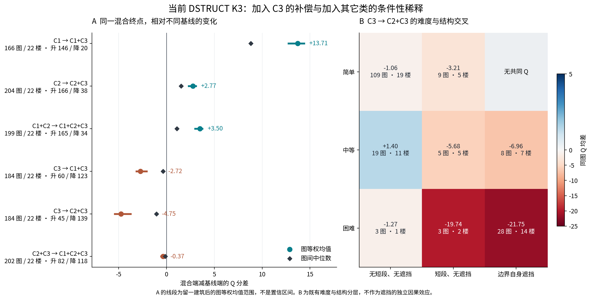
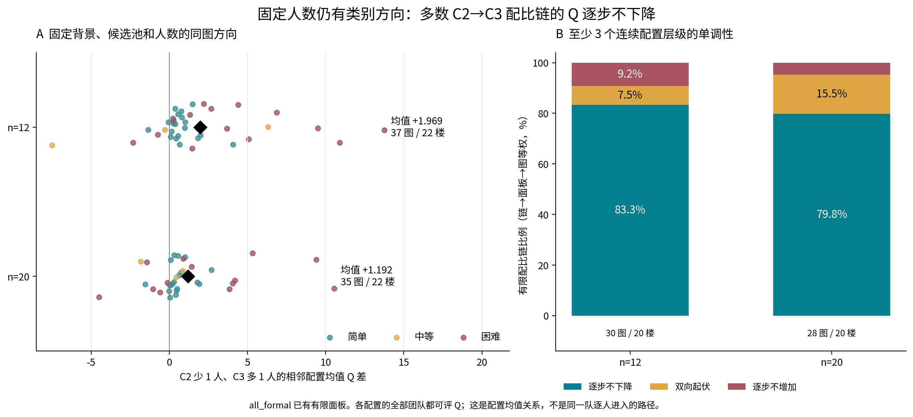
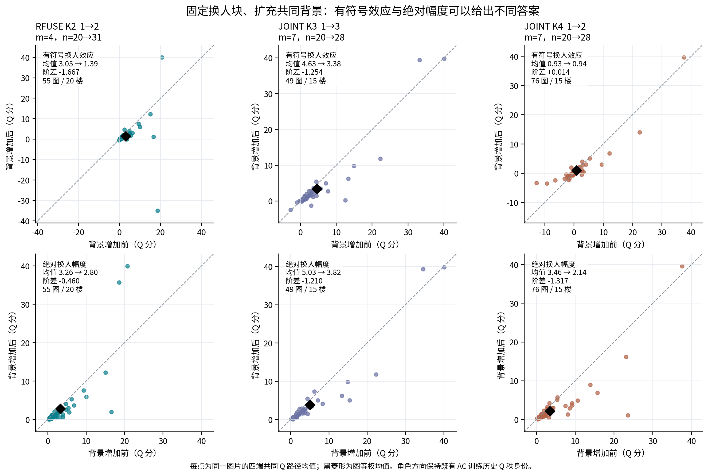
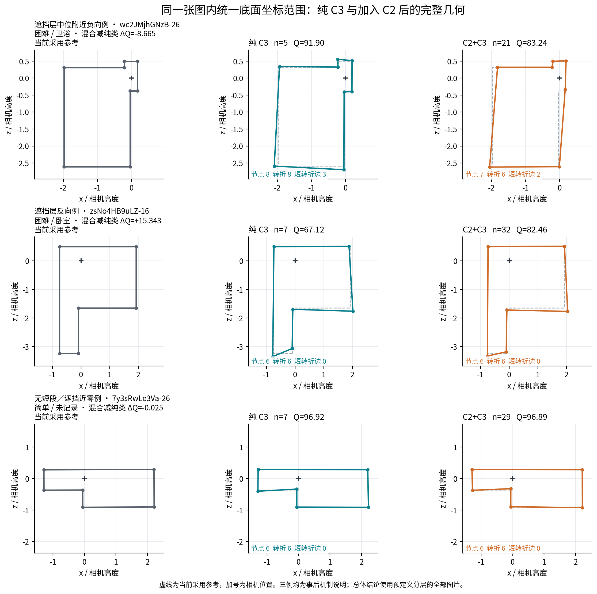
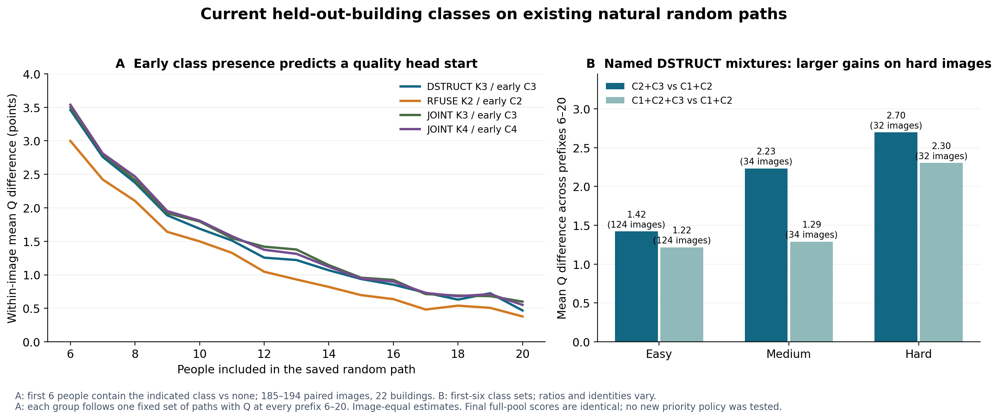
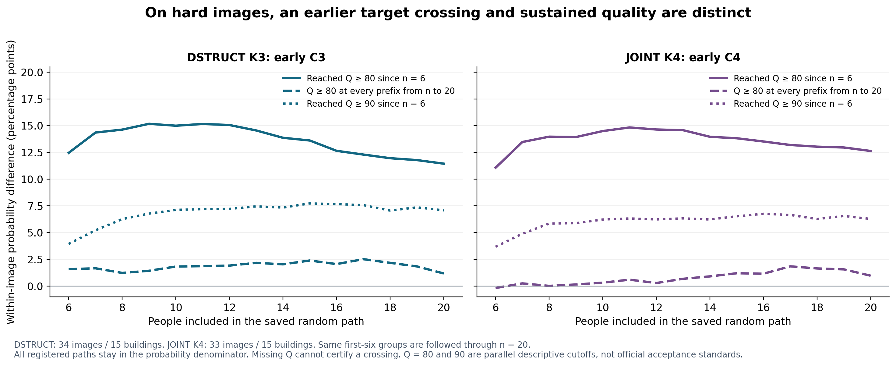
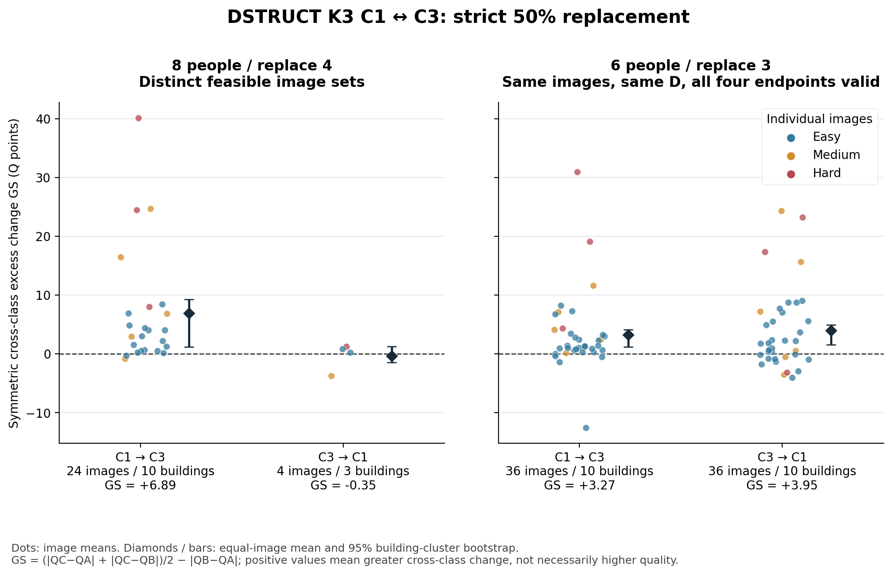

204 张共同图中 166 张提高；同一混合队相对纯 C3 又可能下降。
190 图中 165 图提高。比较前 6 人构成，观察已有 6—20 人路径。
新 6/3 双向严格 ABC，36 图/10 楼；32 图同向，四端点共同支持。
1. 同一个混合队，相对不同基线会得到不同答案
C3 加入 C1/C2，通常补充有用结构；C2 加入 C3，又可能把部分结构表达稀释。困难和边界自遮挡层中的差异较大。
均值和中位数均来自同图差值。转折/遗漏分项有自己的有效支持；表中“正/负”表示数值方向。完整联盟改变实际人数。可评率变化单列，缺失 Q 不记 0。
2. 固定人数后，构成比例仍有方向
DSTRUCT C2 少 1 人、C3 多 1 人：n=12 平均 +1.969 Q，n=20 平均 +1.192 Q。多数有限配比链逐步不下降，同时保留同配比成员波动。
相邻两配置的所有登记团队均有 Q；同图同候选池、固定背景。比较配置均值，不把每个均值差冒充一次实际成对换人。
查看科研图和具体几何例




3. 更早接近参考，与之后持续保持分别观察
在同图已有随机路径中，前 6 人包含指定类别的一组通常具有早期质量优势。每组至少 16 条路径。默认查看固定完整路径的 Q 曲线；也可切换逐前缀有效 Q、低尾和首次/持续达标概率，进一步按难度查看。
线表示“早期有该类−没有该类”的图片等权差。完整路径 Q 固定同一批图片和6—20路径；逐前缀有效 Q 的路径可随 n 变。概率保留全部路径作分母。持续只指观察到的 n…20；全部 N 人的最终成员与 Q 相同。


4. C1↔C3 50% 严格 ABC：真实新端点
8/4 回答各方向可实现的最大容量条件；6/3 用同图、同 D 和同一四端点直接比较两方向。GS 衡量跨类额外变化，Q 位移衡量实际升降。

3,200 事件、4,992 唯一团队，48 张不同图片。4,898 端有 Q，94 端无连接；自动新端点不借用其他团队人工环序。正式可评、相机可见核诊断和核内敏感性在专题内分列。
严格 ABC 完整报告 · 支持与缺失 · 共享四端点结果 · 冻结设计
5. 实际补接与采用结论
K4 小池的 1,081 个端点命中两个已批准人工顺序，辅助统计已接入，自动版保留。优先高历史 Q 的早期均差由 +1.500 更新为 +1.534；主目标自然路径未命中人工端点。
全部逐条结论及来源 · 方法与范围 · 来源与复现 · v2.1 当前采用口径